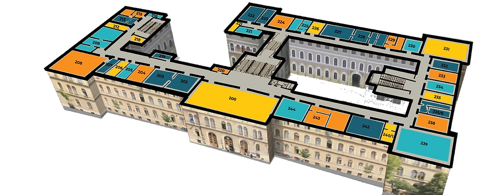

Săli

- AM: Amfiteatrul de Mecanică "Victor Marian", etaj II, sala 208
- AE: Amfiteatrul de Electricitate "Augustin Maior", etaj II, sala 239
- 6/II: etaj II, sala Facultatea de Matematică
- 5/II: etaj II, sala "Farkas Gyula"
- 3/II: etaj II, sala 224
- 2/I: etaj I, sala Facultatea de Matematică
- 7/I: etaj I, sala Facultatea de Matematică
- 5/I: etaj I, sala Facultatea de Matematică
- 224B (3/IIB): sala 224
- HO: Sala Herman Oberth, etaj II, sala 238
- s7, s9: subsol, intrarea pe scările din curte, lângă poarta laterală
- s38, s39: Centrul Național de RMN, Institutul "Ioan Ursu"- subsolul Clădirii Centrale
- A311, Axx: săli în clădirea Facultății de Drept, str. Avram Iancu
- sălile Gamma, Lambda: clădirea Mathematica, str. Ploiești 23-25
- L321, L307, ...L338, L343, C310: laboratoare/săli, etaj III, Campus - str. T. Mihali
- C510: etaj 5 Campus - str. T. Mihali
- A2: amfiteatru Campus - str. T. Mihali
- AMF: Facultatea de Business, str. Horea nr.7
- Amf. "I.Silaghi-Dumitrescu": Facultatea de Chimie, str. Arany Janos nr. 11
- L8 Chimie: Facultatea de Chimie, str. Arany Janos nr. 11
- 129 Chimie: Facultatea de Chimie, str. Arany Janos nr. 11
- L204: Facultatea de Chimie, str. Arany Janos nr. 11
- Amf. Fiziologie: str. Clinicilor nr. 1-3, Catedra de Fiziologie
- A 3.13 - INCDTIM: str. Donath 67-103, clădirea A, etaj 3, sala 13
- Parcul sportiv "Iuliu Hațieganu"
Pentru disciplinele de la Facultatea de Matematică și Informatică, vedeți aici săli.